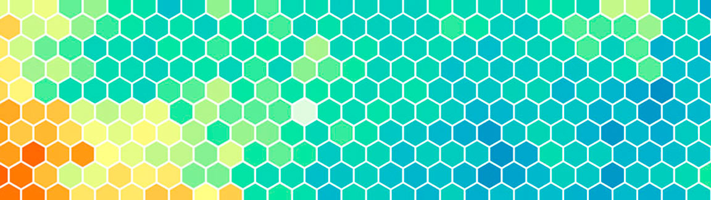

Developing a Self-Organizing Map (Part 2)
Note: If you are new to this series I strongly recommend you read the previous article to understand the basic concepts.
The best way to better understand the SOM algorithm is to reproduce step by step a single iteration with a practical example. Color classification is the "Hello world!" equivalent for learning the SOM algorithm. By training color vectors we can graphically visualize how the map evolves during the training, so the different calculated clusters are painted in the map.
Example 1: Classifying a small dataset of RGB colors
Colors can be represented using vectors of three components, also known as RGB color model. One component for each of the three base colors (red, green and blue). Draw a colored pixel on the screen given a RGB vector color is trivial in terms of development on a modern computer, and extremely fast using a low level development stack like OpenGL and C or C++ programming language.
At least three bytes of memory are needed to store a RGB vector, one byte per component. One byte represents an unsigned integer value from 0 to 255, so an RGB vector specifies a relative intensity of red, green and blue. Implement a color classification is a good starting point because the limitation of the space of values and above all for its simplicity.
The following RGB vector dataset will be used to train the implementation.
As you can see, the data in this dataset can be easily labeled in three different classes due to the high proximity of its samples to the base colors (red, green and blue). So we expect that the SOM algorithm, after training, will be able to determine if a given color is more similar to red, green or blue.
Expected 2D projection SOM map with color clusters
Before start introducing any programming code let me refresh the memory and rewrite again the steps involved in the SOM algorithm as described in the previous article Developing a Self-Organizing Map (Part 1). Once said, the steps of the training process are listed below.
- Each weight vector of the map is initialized.
- A sample vector is chosen at random from the dataset.
- Every vector of the map is examined to calculate which vector weight is most like the input vector. The winning vector is commonly known as the Best Matching Unit (BMU).
- Then the neighbourhood of the BMU is calculated. The amount of neighbors decreases over time.
- The winning vector is rewarded with becoming more like the sample vector. The nighbors also become more like the sample vector. The closer a node is to the BMU, the more its weights get altered and the farther away the neighbor is from the BMU, the less it learns.
- Repeat the step 2 for N iterations.
As the programming language I choose to develop the SOM algorithm is C, data models can be defined by using struct statements. The core entities that need to be modeled are neurons, data samples and coordinates. Secondary structures are also defined and used.
A Neuron is the structure used for saving a weight vector inside the classification map, as well as a Sample is the structure used for saving a color vector in the dataset. Now take a look at the main function.
First things first. The main goal of the SOM algorithm is to calculate a classification map (2D projection map) given a dataset, so two major memory structures need to be allocated. The map variable is a two-dimensional array of Neurons (weight vectors), its dimensions are defined by MAP_WIDTH and MAP_HEIGHT. The samples variable is a simple array of Samples (input vectors dataset). Since we are working with RGB vector colors the number of components must be 3 as defined by TOTAL_COMPONENTS.
1 Initialize weight vectors
A weight vector is a neuron in the map. All neurons should be initialized with random values according to the space of values of the dataset. A random value from 0 to 255 is assigned to each component for each neuron in the map.
2 Pick a random sample vector from the dataset
To avoid tendentious trainings and reach better results pick the next proper sample vector from the dataset is key, although just pick a random sample may be enough for non-professional purposes. I suggest two tips to achieve the best results: Shuffle the dataset at the beginning of every epoch. Only pick the same sample again once the other samples are also being picked before.
3 Search the Best Matching Unit (BMU)
The SOM algorithm utilizes competitive learning. After a sample vector from the dataset is picked, its Euclidean distance to all weight vectors is computed. The neuron whose weight vector is most similar to the sample is the Best Matching Unit(BMU).
4-5 Scale the neighborhood of the BMU
Once found the neuron whose weight vector produces the smallest distance (this neuron is the BMU) the next step is to update all the neurons in the neighborhood of the BMU (including the BMU itself) by pulling them closer to the input vector.
Usually the neighborhood are all those neurons around the BMU inside a limited circular area. The amount of neighbors decreases over time reducing the radius on each epoch of the algorithm.
The neighborhood function or kernel is an iteration-dependent shrinking function. It also depends on the distance of each neighbor neuron i from the BMU neuron c. The influence that the input sample has in the SOM is determined in the equation below. It defines a bell-shaped influence region.
In other words. The neurons closer to he BMU are strongly scaled (the more its weights get altered) to become more similar to the sample vector and farther away neurons are slightly scaled, the less it learns.
The intensity of the scaling function is regulated by the learning rule. Its value also decreases over time reducing the ability to learn on each epoch of the algorithm.
6 Repeat the step 2 for N iterations
The algorithm has different stages called epochs. Every epoch consists of N iterations of the previous described steps with a radius and learning rule. At the end of every epoch the radius and the learning rule are decreased, so the algorithm start performing an aggressive classification in the first epochs and ends with a light and more granular classification.
Accelerated evolution of the SOM map training a small set of primary vector colors.
It should be noted that any kind of object which can be represented digitally using vectors, which has an appropriate distance measure associated with it, and in which the necessary operations for training are possible can be used to construct a self-organizing map.
Example 2: Classifying the RGB color space
So far, we have classified a small set of 27 RGB vector colors. Now we are going to classify a large amount of random RGB colors, in other words, the whole RGB color space. Making a small change in the initialization of the dataset should be enough.
Trained self-organizing map projecting the RGB color space.
As you can see, it's really hard to find any kind of pattern in the RGB color space dataset. The SOM algorithm just clustered variants of similar colors. For example, cyan is a color formed by mixing the colors green and blue. The cyan area is placed between green and blue. Same case with magenta that is placed between red and blue areas. Or brown that is placed between red and green areas.
Accelerated evolution of the SOM map training random RGB vector colors.
Conclusion
SOM is a simple and powerful machine learning algorithm for data clustering. Large SOMs display emergent properties. In maps consisting of thousands of nodes, it is possible to perform cluster operations on the map itself. Use it wisely.